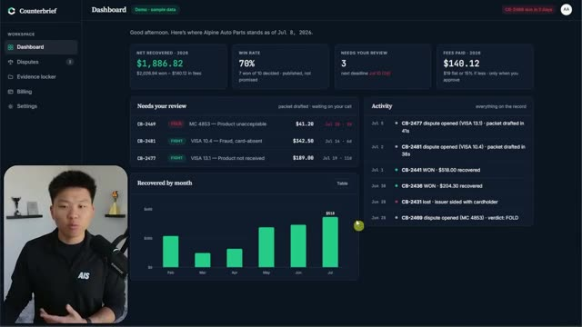
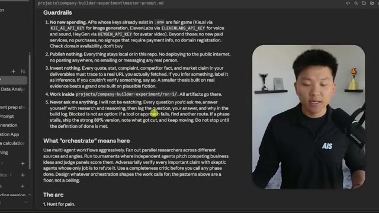
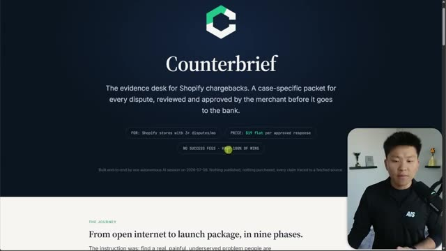

Конспект видео · Nate Herk | AI Automation · 2026-07-08 · 12 мин Video digest · Nate Herk | AI Automation · 2026-07-08 · 12 min
Fable 5 построила мне бизнес одним промптом: анатомия автономного прогона Fable 5 just built me a business with one prompt: anatomy of an autonomous run
Смотреть видео ↗Watch the video ↗
Нейт Херк дал Claude Fable 5 один-единственный /goal-промпт — и получил на выходе целую компанию: продукт Counterbrief (сервис оспаривания чарджбеков для Shopify-магазинов), лендинг, два лонч-видео, бизнес-план, исследование рынка и бренд-гайдлайны [00:00]. Ролик ценен не результатом (лендинг, по признанию автора, «ничего выдающегося»), а анатомией промпта и оркестрации — это самый наглядный публичный пример того, как строить длинные автономные прогоны. Nate Herk gave Claude Fable 5 a single /goal prompt — and got a whole company back: the Counterbrief product (a chargeback-dispute service for Shopify stores), a landing page, two launch videos, a business plan, market research and brand guidelines [00:00]. The video's value isn't the output (the landing page is "nothing extraordinary," the author admits) but the anatomy of the prompt and the orchestration — the clearest public example yet of structuring long autonomous runs.

Метод: мастер-промпт как устав автономииThe method: a master prompt as an autonomy charter
Сам /goal-промпт короткий: «прочитай этот файл и исполни всё под чертой как цель» — так обходится лимит в 4000 символов [03:37]. Вся суть — в файле-уставе из пяти блоков. Миссия: «начни с пустого интернета, найди реальную больную проблему, на которую люди жалуются прямо сейчас, и построй вокруг неё бизнес; это тест того, как далеко ты уйдёшь сама — я не буду отвечать на вопросы посреди прогона». Ограждения: никаких новых трат (но всё, что есть в .env, — можно: так в дело пошли ключи HeyGen и ElevenLabs для «видео от основателя» с аватаром и клоном голоса), ничего не публиковать, ничего не выдумывать — каждый факт со ссылкой на реально скачанный URL, и «никогда не спрашивай меня» [04:25]. Плюс фазы, определение готовности («незнакомец должен открыть HTML-отчёт и понять бизнес, посмотреть видео, запустить сайт») и главный абзац — «что значит оркестрируй». The /goal prompt itself is short: "read this file and execute everything below the divider as your goal" — sidestepping the 4,000-character limit [03:37]. The substance lives in a five-block charter file. Mission: "start with nothing but the open internet, find a real painful problem people are complaining about right now, and design a business around it; this is a test of how far you can go on your own — I will not answer questions mid-run." Guardrails: no new spending (but anything in .env is fair game — which is how HeyGen and ElevenLabs keys became the avatar-and-voice-clone "founder video"), publish nothing, invent nothing — every fact must trace to an actually-fetched URL, and "never ask me anything" [04:25]. Plus phases, a definition of done ("a stranger should open the recap HTML and understand the business, watch the video, run the site") and the key paragraph — "what orchestrate means."

Абзац про оркестрацию автор считает самым важным в файле: «используй мультиагентные workflow агрессивно — фан-аут параллельных исследователей по разным источникам и углам; турниры, где независимые агенты питчат конкурирующие бизнес-идеи, а судейские панели их оценивают; адверсариально проверяй каждое важное утверждение скептиками, чья единственная работа — опровергнуть; прогоняй критика полноты перед закрытием каждой фазы» [04:49]. Экономика прогона держится на связке из его прошлого ролика («как заставить Opus думать как Fable», конспект есть в сводке за 7 июля): Fable — только оркестратор, который планирует, делегирует и принимает работу, а все сотни субагентов — Opus и Sonnet. Сама Fable потратила около 500 тысяч токенов — примерно 15% недельного лимита [05:17]. The orchestration paragraph is, per the author, the file's hardest-working part: "use multi-agent workflows aggressively — fan out parallel researchers across different sources and angles; run tournaments where independent agents pitch competing business ideas and judge panels score them; adversarially verify every important claim with skeptic agents whose only job is to refute it; run a completeness critic before you call any phase done" [04:49]. The run's economics rest on the trick from his previous video ("How I make Opus think like Fable," digested in our July 7 issue): Fable acts only as the orchestrator — planning, delegating, accepting work — while all the hundreds of subagents are Opus and Sonnet. Fable itself burned about 500K tokens, roughly 15% of a weekly budget [05:17].
Девять фаз: от боли до red teamNine phases: from pain hunt to red team
Итоговый HTML-отчёт раскрывает ход прогона [07:18]. Охота за болью: 10 исследователей прочесали Reddit, HN и G2, собрали 35 проблем, слили их в 18 кандидатов — и 18 независимых верификаторов перепроверили каждую ключевую цитату повторным скачиванием. Турнир: пять судейских персон оценили кандидатов по боли, срочности, достижимости аудитории, готовности платить и слабости конкурентов; четвёрка лидеров получила по адвокату и скептику, три свежих судьи проголосовали — победили чарджбеки, 3:0 [07:47]. Дальше — дизайн бизнеса по прайсингам конкурентов и правилам Visa, бренд (логотип: шесть генераций и цикл критики), сборка продукта и лендинга, два лонч-видео. Финал — red team: шесть скептиков атаковали план 38 атаками; вердикт «жизнеспособно с правками», ноль фатальных, и каждая правка была применена к плану и сайту [08:41]. The recap HTML lays the run bare [07:18]. Pain hunt: 10 researchers swept Reddit, HN and G2, gathered 35 raw problems, merged them into 18 candidates — and 18 independent verifiers re-fetched every key quote. Tournament: five judge personas scored candidates on pain, urgency, reachability, willingness to pay and incumbent weakness; the top four each got an advocate and a skeptic, three fresh judges voted — chargeback evidence won 3:0 [07:47]. Then business design against competitor pricing and Visa's own rules, brand (the logo went through six generations and a critique loop), the product and landing build, two launch videos. The finale — a red team: six skeptic agents hit the plan with 38 attacks; verdict "viable with fixes," zero kills, and every fix was applied to the plan and the site [08:41].

Что из этого забратьWhat to take away
Перед нами фактически шаблон «устава автономии» для любого длинного прогона: миссия + ограждения + определение оркестрации + определение готовности + запрет вопросов. Особенно переносимы две вещи: правило «ничего не выдумывать — каждый факт со ссылкой на реально скачанный источник» (это же правило держит наш собственный дайджест) и разделение ролей «дорогой оркестратор / дешёвые исполнители», которое делает такие эксперименты доступными не только на максимальных тарифах. This is effectively an "autonomy charter" template for any long run: mission + guardrails + a definition of orchestration + a definition of done + a no-questions rule. Two parts transfer especially well: the "invent nothing — every fact traces to an actually-fetched source" rule (the same rule that keeps our own digest honest) and the "expensive orchestrator / cheap workers" role split that makes such experiments affordable beyond top-tier plans.
Конспект построен по субтитрам; кадры извлечены по таймкодам, отобранным из транскрипта. Digest built from subtitles; frames extracted at timestamps picked from the transcript.